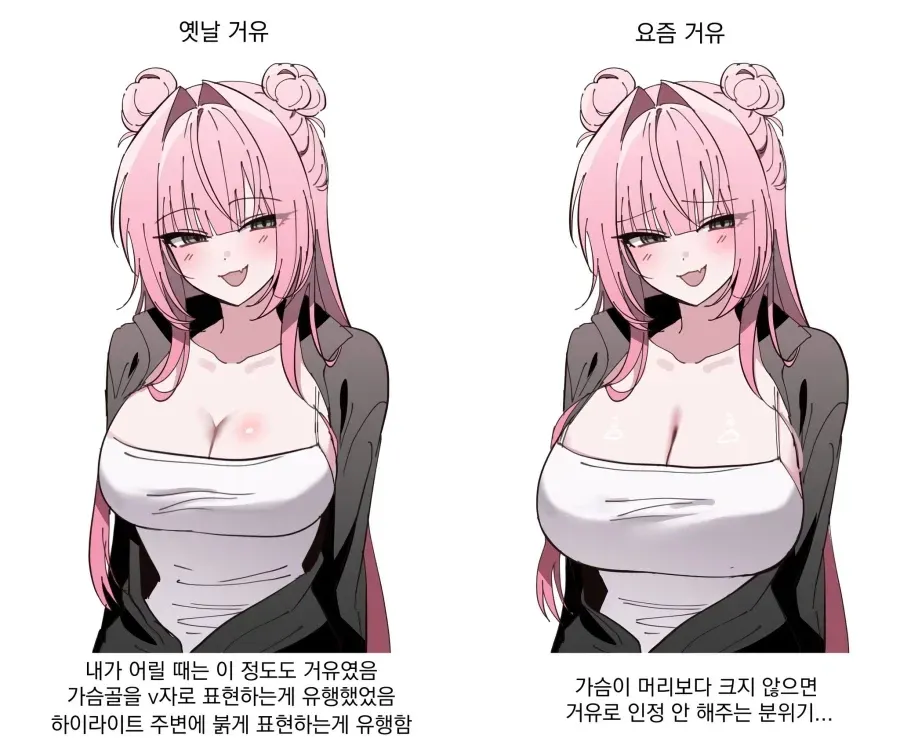
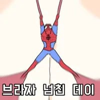

가슴 인플레 미쳤네 ㅋㅋㅋㅋ
한창 나올때 당시엔 너무 커서 놀랐는데
ㅋㅋ 이거 제일 잘 느껴질때가 하루히 미쿠루임
미쿠루 그때 당시 거유 캐릭터의 대장격 캐릭터였는데
지금보면 이런 어중간한 빈유가 따로없음 ㅋㅋㅋㅋ
찾아보니깐 젖개작네
그림체도 개 못생겼네
와 진짜네 예전엔 혼자봐도 민망할정도로 크다 느꼈는데 지금 보니 그냥 평범한 수준이라 생각되네 ㅋㅋㅋㅋ
찌머크
장유가 유행

수박이 세개
왼쪽은 빈유네

요새는 륜머크임
옛날거유특 보형물 집어넣은것마냥 Y존생김
요즘거유특 현실반영 들어가서 I존 장유에 처짐 까지 반영해둠
2D에까지 현실반영할필요는없다고 생각해..
옛날 수술가슴 그림으로 돌아가자고?
그냥 I존인게 더 꼴리지 않냐
장유에 처짐은 좀...
ㄹㅇ
I인거 보다 너무 커서 배대지까지 처 내려서 그린게 너무 혐오 스러움
찌찌에 어린애 하나 못들어갈만한 크긴데 어떻게 거유라 할수 있나

Y자는 영끌이라고 ㅋㅋㅋㅋ 빈유년
가슴 커도 형태가 애매하면 Y존 나옴
약간 가슴 가운데가 빈 형태?
왼쪽은 거유고 오른쪽은 폭유야
리제로 보는데
에밀리아 이년 가슴이 계속커짐
하프엘프도 성장기인건지.. 가슴이 진짜 1화1화 흐를때마다 커지는데 나중에는 대가리보다 커질듯


찌머크
라스트오리진 기준으로는 H컵이하는 죄다 빈유다
가슴 골이 있어야할 자리에 보지가 있으면 좆같더라
머리보다 크지않으면 애기 굶어죽음
거거익선
과유불급
ㄹㅇ 어릴땐 제로의사역마 보면서
티파니아 가슴이 과할정도로 말도안되게 크다고 생각했는데
지금 티파니아 검색해서 보니까 그냥 적당히 크네 ㅋㅋㅋㅋ